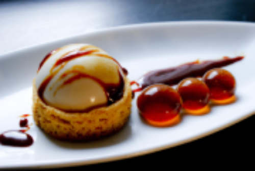

- La Cuisine Gastronomique:
Il s’agit d’un type de préparation qui s’appuie sur la cuisine traditionnelle, mais mise beaucoup sur la qualité des produits employés.

- La Cuisine Traditionelle:
Issue des traditions d’une région, voire d’un pays, la cuisine traditionnelle consiste à préparer les aliments de la production agricole locale et saisonnière en fonction de coutumes transmises au fil des siècles.
par exemple ce sont des plat traditionelle au liban
"Pizza" est un plat traditionelle en italie
- La Cuisine Exotique:
Ces types de préparations incluent toutes les cuisines du monde, qui ont été importées en Europe et en France par les mouvements de population.
- La Cuisine Moleculaire:
Véritable discipline scientifique, la cuisine moléculaire étudie les réactions chimiques et physiques des aliments lors de leurs cuissons.

- La Nouvelle Cuisine:
Malgré son nom, la nouvelle cuisine a fait son apparition dès le 18e siècle. Remise au goût du jour par l’incontournable guide Gault et Millau, dans les années 1970, la nouvelle cuisine n’est en réalité qu’une manière plus légère d’aborder les recettes traditionnelles.
Les 10 commandements de la nouvelle cuisine:
- « Tu ne cuiras pas trop. »
- « Tu utiliseras des produits frais et de qualité. »
- « Tu allégeras ta carte. »
- « Tu ne seras pas systématiquement moderniste. »
- « Tu rechercheras cependant ce que t’apportent les nouvelles techniques. »
- « Tu éviteras marinades, faisandages, fermentations, etc. »
- « Tu élimineras les sauces riches. »
- « Tu ne truqueras pas tes présentations. »
- « Tu seras inventif. »
quatre bouchees servies au restaurant lameloise